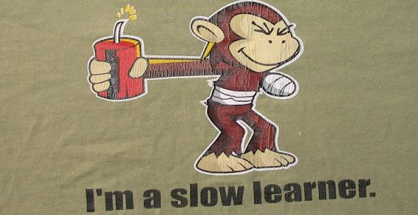
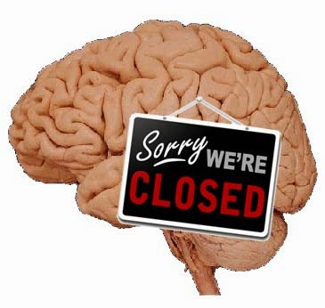
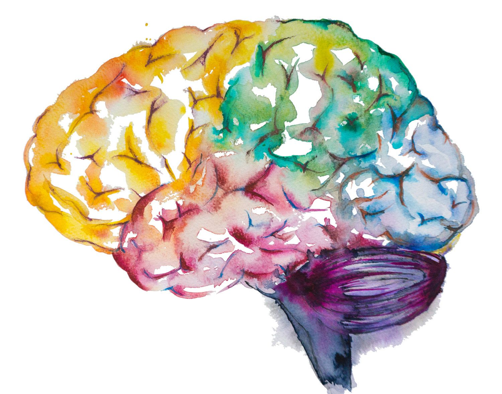

So you want to know
I get it. Curiosity got to you.
You now want to know if the random asshole on discord that sent you this website when you asked a stupid question is right.
Make no mistake, they probably are, but let's make sure.
You should probably just take an IQ test, but I digress.
Slow learning
The ability to learn is the cornerstone of intelligence. So less intelligent individuals are? You guessed it, slower learners.
Good job, you're not too stupid after all.
Now, telling whether you're a slow learner or not can be difficult, primarily because we perceive the world at a particular rate and depth,
so our intelligence might seem normal to us, when sometimes it is not.
So this is the best, yet, at the same time, the worst method to find out (by yourself).
Close mindedness
Those who are stupid are less likely to be open minded. Shockah, innit? This isn't very surprising because
to be open minded you first have to understand that there are things that you don't know, something that the
simpleton may not know. Another barrier the simpleton must break is to have the desire to find out about
that which he does not understand, and this one is even harder for them to break because they understand slower,
so a lot of times they're too lazy.
Connection with others
The more (unfortunately?) intelligent individuals are less likely to connect with their peers for two reasons:
1. Since their peers are cognitvely slower he or she might feel like they can't catch up fast enough,
And that he or she will probably get upset that they have to dumb a lot of things down.
2. Their peers will probbaly not share the same interests. And even if they do reason 1 will be a bummer.
If you've never had these problems then you're not in luck today, my friend.
Uncreative
Creativity requires you to be more cognitvely competent because creative ideas are novel.